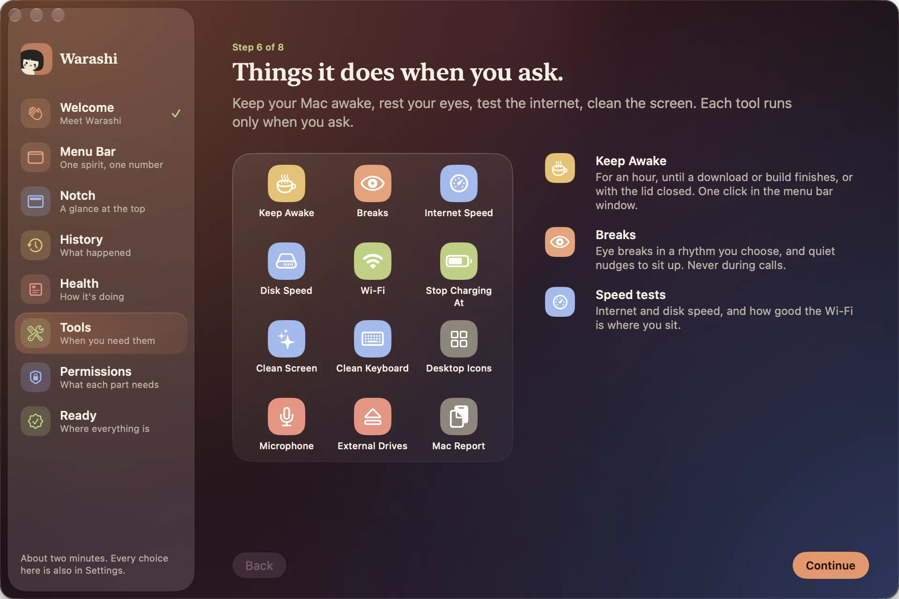

Warashi 首次打开时，一段简短的动手导览会带你熟悉它。左侧的列表与 Warashi 窗口是同一张地图；点按任一步骤即可跳转。每一页都实时展示真实功能并让你试用：每个开关都是真实设置，某项功能可用时，绿色对勾会告诉你现在会怎样。每一页还会说明之后在哪里更改，并提供在帮助中了解更多，打开本帮助的相应部分。大约两分钟，任何内容都可跳过。
- 欢迎
Warashi 是什么，以及四项承诺：你的历史记录留在你的 Mac 上；无需账户，也无需事先设置；只请求功能所需的权限；匿名使用统计帮助改进它。点按带我看看。

第 1 页：认识一下 Warashi。 - 菜单栏
选择小精灵旁显示的数字，看着真实的菜单栏随之变化。显示需要处理的事项会在内存不足或 Mac 过热时把数字切换为警告。然后试试：点按菜单栏中的小精灵，页面会确认菜单栏窗口已打开。

第 2 页：菜单栏项目，以及点按它。 - 刘海
试试：把指针停在刘海上（其他显示器上则是小岛）。页面会注意到仪表盘打开，并告诉你可以做什么。下方：一览、小岛和实时倒计时的开关，以及交换两个数字的按钮。

第 3 页：刘海和小岛。 - 历史记录
飞行日志中的示例一天，以及如何点按历史记录中的任意时刻。打开记录前台应用即可查看每个应用的使用时长；页面会确认正在记录，并说明时间显示在哪里。只记录应用切换，绝不记录窗口标题、网站或按键。

第 4 页：历史记录、飞行日志和活动记录（可选）。 - 警报
四个建议警报：大量占用 CPU 的应用、快速增长的内存、即将填满的启动磁盘，以及发烫的电池。打开其中一个，macOS 会询问一次是否允许通知。允许后，发送测试会显示示例，页面会确认警报将送达。如果通知已关闭，它会告诉你在哪里打开。

第 5 页：警报。 - 健康度
菜单栏窗口中的充电上限卡片，实时显示：打开充电上限，页面会确认充电将停在哪里。然后是如何前往体检、我的 Mac 为什么变慢？和存储。

第 6 页：健康度。 - 休息
真实休息屏幕的缩略图。打开休息，选择节奏（20-20-20、番茄钟、50 和 10 或深度工作），并打开或关闭坐直。试试休息会显示一次真实的休息（按跳过或 Esc 结束），显示坐直会显示升到屏幕中央的姿势提醒。

第 7 页：休息。 - 背景模糊
背景模糊的实时预览。试试：按 ⌃⌥⌘F，除导览外的一切都会柔化为模糊，页面会确认。选择柔和或深度，并可打开晃动指针。

第 8 页：背景模糊。 - 工具
打开保持唤醒一小时试试；页面会确认 Mac 保持唤醒并会自动停止。然后是网速测试、清洁屏幕和键盘，以及按名称查找任何工具的 ⌘K。参见工具。

第 9 页：工具。 - 权限
没有这些，Warashi 也能运行；每一项都会解锁其中一部分功能。每张卡片都会说明它的用途，以及当前是关闭、快好了还是开启；你在系统设置中开启某项的那一刻，页面就会察觉到。
- 通知：按允许，macOS 会询问一次（若已打开某个警报则已完成）。警报需要它。
- 系统辅助程序：按开启，然后在系统设置 › 通用 › 登录项中开启 Warashi（需管理员批准一次）。有了它，Warashi 可以在任意电量停止充电、合盖时保持 Mac 唤醒，并看到 macOS 自己的进程。
- 完全磁盘访问权限：按打开系统设置，在列表中开启 Warashi，或把图标拖进去。之后储存空间可以一次看到整个磁盘，体检也能读取 Time Machine 上次备份的时间。只读取名称、大小和日期，绝不读取文件内容。如果 macOS 要在 Warashi 重新启动后才生效，请按重新打开 Warashi：导览会回到这一页。
每项都可跳过。有两项只在需要时询问：在“存储”中移除应用时，以及清倒废纸篓中需要密码的项目时。

第 10 页：权限（均为可选）。 - 准备就绪
已开启的功能：实时读取你在导览中设置的一切，并说明各自的更改位置。继续了解：帮助、问与答、指南和新功能，以你的语言在 warashi.app 上打开。值得记住的快捷键、登录时打开 Warashi（让历史记录不留空白），然后开始监测。

第 11 页：已开启的功能，以及在哪里了解更多。
如果出现问题
- 点按小精灵或指向刘海后没有打勾：请确认菜单栏中显示了 Warashi 的项目，并且已打开“刘海旁一览”。
- 按 ⌃⌥⌘F 没有反应：可能有其他应用使用了相同的快捷键。请改用页面上的开启。
- 发送测试后没有显示：请在“系统设置 › 通知”中允许 Warashi。
- 系统辅助程序显示“快好了”：请打开系统设置 › 通用 › 登录项，在“允许在后台”下开启 Warashi。
- 导览没有出现：请从“应用程序”中打开 Warashi，然后前往设置 › 通用 › 再次显示欢迎界面。
更多内容见疑难解答，或发送电子邮件至 adam@warashi.app。